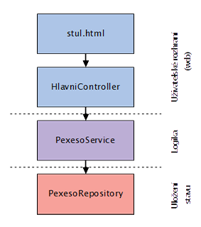
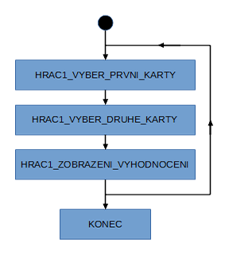

Úkol 10 - Pexeso na webu
Ukolem je zprovoznit pexeso na webu.
Materialy pro pexeso najdete zde: Ukol10-pexeso.zip
1. Rozbehnuti a prozkoumani architektury
Vyjdete z 10-Pexeso-In_memory.
Nejprve si aplikaci spustte a vsimnete si, za co je ktera komponenta zodpovedna.
Chteli jste videt, jak se napise trosku vetsi realna aplikace. Tak tady ji mate :-)

Predevsim si vsimete komponenty PexesoService, do ktere je presunuta cela logika pexesa.
Dale si vsimete datoveho modelu, tedy trid HerniPlocha a Karta.
Vsimete si, ze trida HerniPlocha ma ID, ktere se pouziva na webu. Program tak umoznuje evidovat vice her soubezne (coz je na webu bezne).
Aktualne je aplikace stavova, tzn. ze je v programu uchovavan stav her. Pokud byste ji restartovaly, vsechny rozbehnute hry se ztrati. Uchovavani stavu je zamerne separovano do jedine tridy - PexesoRepository.
Webova interakce je taky zajimava. Vsimnete si, jak spolu interaguje stul.html a HlavniController. Predevsim ze kazdy pozadavek GET na stul.html zobrazi aktualni stav herni plochy. Zaroven kazdy pozadavek POST na stul.html provede tah (vstupni parametr vybranaKartaXX urcuje, se kterou kartou byl proveden tah).
2. Naprogramovani vlastni PexesoService
Tento podukol je povinny jen pro pokrocile studentky.
Zavrete 10-Pexeso-In_memory a vyjdete z 20-Pexeso-Bez_logiky. Ukolem je napsat vlastni logiku pexesa.
HlavniController pozaduje po PexesoService zhruba tyto sluzby (metody):
vytvorNovouHerniPlochu() -> vraci objekt HerniPlocha
najdiHerniPlochu(Long id) -> vraci objekt HerniPlocha
provedTah(Long idHerniPlochy, int cisloKartyNaKterouSeKliknulo)
Prvni dve metody jsou jednoduche.
vytvorNovouHerniPlochu() zalozi novou herni plochu se vsemi kartickami
a ulozi ji do PexesoRepository.
Nove herni plose se priradi ID,
podle ktereho bude najdiHerniPlochu(Long id)
schopna kdykoliv tuto herni plochu znovu vyzvednout.
Treti metoda, to je ta masita cast (veganky prominou :-).
provedTah(...) se vola pri kliknuti na karticku pexesa.
Hra pexesa se muze nachazet v 1 z techto stavu:
HRAC1_VYBER_PRVNI_KARTY,
HRAC1_VYBER_DRUHE_KARTY,
HRAC1_ZOBRAZENI_VYHODNOCENI,
KONEC
Pokud byste chtely implementovat hru 2 hracu, stacilo by pridat par stavu a evidovat, ktery hrac je ktery. Pro zjednoduseni to ale nebudeme uvazovat.

Podle stavu, ve kterem se hra nachazi, se interpretuje, co ma provest kliknuti na kartu.
HRAC1_VYBER_PRVNI_KARTY... vybrana karta se zobrazi licem nahoru (pokud byla rubem nahoru; jinak se tah ignoruje)HRAC1_VYBER_DRUHE_KARTY... vybrana karta se zobrazi licem nahoru (pokud byla rubem nahoru; jinak se tah ignoruje)HRAC1_ZOBRAZENI_VYHODNOCENI... vyhodnoti se, ktere karty jsou licem nahoru (museji byt prave 2) a pokud maji stejne cislo obrazku, nastavi se jako odebrane. Dale se hra prepne zase do prvniho stavuHRAC1_VYBER_PRVNI_KARTYnebo do stavuKONEC.KONEC... znamena, ze uz nic dalsiho hra delat nebude.
Naprogramujte tedy chybejici metody v PexesoService. Tam kde je // TODO.
3. Prevod na databazovou persistenci
Tento podukol je opet povinny pro vsechny!
Stav hry je separovan do komponenty PexesoRepository.
Aktualni verze uklada data v pameti, takze se pri restartu aplikace stav soubeznych her ztrati.
public class PexesoRepository {
private Map<Long, HerniPlocha> seznamHernichPloch;
}
Ukolem je dopsat druhou verzi repository, ktera bude ukladat stav her do databaze a program pujde libovolne restartovat bez ztraty stavu her. Tim padem se stane samotna javova cast bezstavovou (ZEN vsech webovych aplikaci).
Pokud jste delaly predchozi podukol, pokracujte v nem.
Pokud ne, vyjdete z 10-Pexeso_in_memory.
Postup:
- Prejmenovani
PexesoRepositorynaInMemoryPexesoRepository. - Vytvoreni
interface PexesoRepositorya nastaveniInMemoryPexesoRepositoryjako potomka interfacuPexesoRepository. - Vytvoreni noveho potomka
PexesoRepositoryjmenemJdbcTemplatePexesoRepository.
Detailni popis 1 a 2
Postup jsme si ukazovali v hodine. Najdete na videu.
Detailni popis 3:
Bude treba zalozit databazi na vasem lokalnim pocitaci. Vsechny z vas, prosim, pouzijte stejnou databazovou strukturu.
Na Tomcat.cloudu uz bude zalozena, takze tam ji nemusite vytvaret. Protoze se jednotlive hry identifikuji pomoci ID, vic webovych aplikaci (jedna od kazde z vas) si na Tomcat.cloudu "nepoleze navzajem do zeli", takze spolu muzou v klidu koexistovat nad 1 databazi.
CREATE DATABASE Pexeso
CHARACTER SET utf8mb4
COLLATE utf8mb4_czech_ci;
USE Pexeso;
CREATE TABLE HerniPlochy (
ID INT PRIMARY KEY AUTO_INCREMENT,
Stav VARCHAR(250),
CasPoslednihoTahu TIMESTAMP DEFAULT now() NOT NULL
);
CREATE TABLE Karty (
ID INT PRIMARY KEY NOT NULL AUTO_INCREMENT,
HerniPlochaID INT NOT NULL,
CisloKarty INT DEFAULT 0 NOT NULL,
Stav VARCHAR(250) ,
PoradiKarty INT NOT NULL DEFAULT 0,
CONSTRAINT HerniPlocha_FK FOREIGN KEY (HerniPlochaID) REFERENCES HerniPlochy (ID)
);
Zde jsou metody pro pristup do databaze.
Zalozeni nove HerniPlochy v databazi:
private HerniPlocha pridejHerniPlochu(HerniPlocha plocha) {
GeneratedKeyHolder drzakNaVygenerovanyKlic = new GeneratedKeyHolder();
String sql = "INSERT INTO HerniPlochy (Stav, CasPoslednihoTahu) VALUES (?, ?)";
odesilacDotazu.update((Connection con) -> {
PreparedStatement prikaz = con.prepareStatement(sql, Statement.RETURN_GENERATED_KEYS);
prikaz.setString(1, plocha.getStav().name());
prikaz.setObject(2, Instant.now());
return prikaz;
},
drzakNaVygenerovanyKlic);
plocha.setId(drzakNaVygenerovanyKlic.getKey().longValue());
List<Karta> karticky = plocha.getKarticky();
for (int i = 0; i < karticky.size(); i++) {
Karta karticka = karticky.get(i);
pridejKarticku(karticka, plocha.getId(), i);
}
return plocha;
}
private void pridejKarticku(Karta karticka, Long plochaId, int poradiKarty) {
GeneratedKeyHolder drzakNaVygenerovanyKlic = new GeneratedKeyHolder();
String sql = "INSERT INTO karty (CisloKarty, Stav, HerniPlochaID, PoradiKarty) " +
"VALUES (?, ?, ?, ?)";
odesilacDotazu.update((Connection con) -> {
PreparedStatement prikaz = con.prepareStatement(sql, Statement.RETURN_GENERATED_KEYS);
prikaz.setInt(1, karticka.getCisloKarty());
prikaz.setString(2, karticka.getStav().name());
prikaz.setLong(3, plochaId);
prikaz.setInt(4, poradiKarty);
return prikaz;
},
drzakNaVygenerovanyKlic);
karticka.setId(drzakNaVygenerovanyKlic.getKey().longValue());
}
Nalezeni HerniPlochy z databaze podle ID:
public HerniPlocha findOne(Long id) {
HerniPlocha herniPlocha = odesilacDotazu.queryForObject(
"SELECT ID, Stav FROM HerniPlochy WHERE ID = ?",
prevodnikPlochy,
id);
List<Karta> karticky = odesilacDotazu.query(
"SELECT ID, CisloKarty, Stav FROM Karty WHERE HerniPlochaID = ?",
prevodnikKarty,
id);
herniPlocha.setKarticky(karticky);
return herniPlocha;
}
Update (ulozeni) stavu herni plochy do databaze, vcetne stavu karticek:
private HerniPlocha updatuj(HerniPlocha plocha) {
odesilacDotazu.update(
"UPDATE herniplochy SET Stav = ?, CasPoslednihoTahu = ? WHERE ID = ?",
plocha.getStav().name(),
Instant.now(),
plocha.getId());
List<Karta> karticky = plocha.getKarticky();
for (int i = 0; i < karticky.size(); i++) {
Karta karticka = karticky.get(i);
odesilacDotazu.update(
"UPDATE karty SET Stav = ?, PoradiKarty = ? WHERE ID = ?",
karticka.getStav().name(),
i,
karticka.getId());
}
return plocha;
}
Operace update a insert by bylo dobre provadet v transakci, ale to ted resit nebudeme. Pokud by to nekoho zajimalo, zeptejte se na hodine.
Odevzdání domácího úkolu
Svoje pexeso vystavte na Tomcat.cloud na https://sladkost.tomcat.cloud/ukol10/.
Ukázkové pexeso můžete vidět na https://margot.tomcat.cloud/ukol10/.
Projekty nejprve zbavte přeložených artefaktů,
aby byly menší.
To zařídíte ručním smazáním složky PROJEKT/target
nebo pomocí v IntelliJ IDEA -> Maven Projects -> ukol -> Lifecycle -> clean.
Poté projekty zabalte pomocí 7-Zipu pod jménem
Ukol10-Vase_Jmeno.7z.
Lze použít i jen prostý zip (například na Macu).
Takto vytvořený archív nahrajte na
Google Drive
do složky Ukol10.
Vytvořte archív .war v IntelliJ IDEA -> Maven Projects -> ukol -> Lifecycle -> clean
a následně IntelliJ IDEA -> Maven Projects -> ukol -> Lifecycle -> package.
Goal package vytvoří archív .war PROJEKT/target/ukol10.war.
Nasaďte jej do vašeho lokálního Tomcatu (JAVATRAINING/Tomcat/webapps)
a vyzkoušejte, že funguje (https://localhost:8080/ukol10/).
Po odladění nasaďte tento archív ještě přes FTP na server Tomcat.cloud
(https://sladkost.tomcat.cloud/ukol10/).
Vytvořte snímek obrazovky spuštěného programu a pochlubte se s ním ve fotoalbu Úkol10 na Facebooku.
Pokud byste chtěli odevzdat revizi úkolu (např. po opravě),
zabalte ji a nahrajte ji na stejný Google Drive znovu,
jen tentokrát se jménem Ukol10-Vase_Jmeno-verze2.7z
Termín odevzdání je do úterý 8. 5. 2018 23:59. Pokud úkol nebo revizi odevzdáte později, prosím pošlete svému opravujícímu kouči/lektorovi email nebo zprávu přes FB.